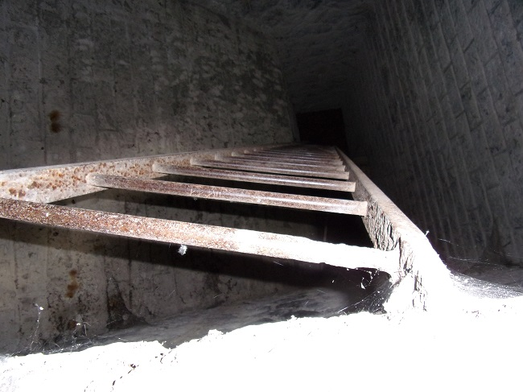
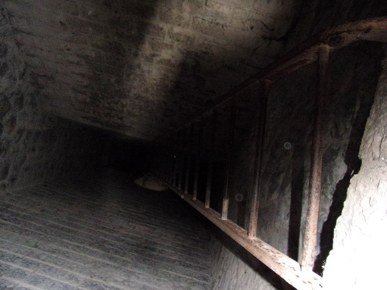
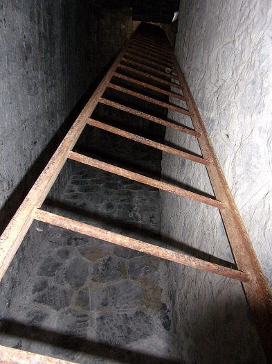

La vision de l'utilité militaire de la ligne Rivesaltes / Quillan ressort des multiples caches à mines qui jalonnent les ouvrages de la voie ferrée de Saint Martin Lys à Cavirac. Bien sûr ces caches n'étaient pas des réserves d'explosif, mais avaient pour but de détruire ces ouvrages pour rendre la ligne inutilisable si elle passait à l'ennemi.
On peut en apercevoir une à la gare de St Martin même (j'ai jamais pris le temps de la photographier), Une au milieu du tunnel de la Pierre-Lys avec 6 bassins répartis des 2 cotés de la voie et en hauteur, mais surtout dans les deux piliers du viaduc du Rebuzo. C'est de l'interieur de ces 2 piliers que je vous propose ces quelques photos.
L'entrée
La rampe d'accès de l'entrée
Rampe d'accès - trace d'usure - usage dangereux
L'échelle - pour descendre dans le pilier
Le haut de l'échelle - bientôt l'échelle se décrochera
Gros plan sur le haut de l'échelle et sur le premier barreau
Bas de l'échelle - vue vers le haut
Bas de l'échelle - vue vers le haut de dessous avec la barre de soutien qui rigidifie l'échelle
Remontée vers l'arche
Remontée vers l'arche - vue du plafond
Remontée vers l'arche - vue du haut de la remontée vers l'entrée
Remontée vers l'arche - vue du haut de la remontée vers l'entrée 2
Dans l'arche
Pour être complet il manque la photo des escaliers qui montent dans l'arche coté droit...

Vue depuis l'arche, coté droit vers village
Vue depuis l'arche, vers le haut
Vue depuis l'arche, coté gauche vers village
Vue depuis l'arche, coté gauche vers gare
Vue depuis l'arche, vers le bas. Cet arbre s'attaque-t-il à la structure ?
Vue depuis l'arche, concrétion
Vue de l'entrée du tunnel de Rébuzo
Vue vers l'entrée du tunnel des Oliviers

Pierre d'angle au niveau de la cache à mines, toutes ces pierres d'angle sont décalées, mais semblent encore bien accrochées
Vue depuis le décrochement d'une cache à mines
L'accès à cette cache est beaucoup plus dangereux que l'autre : barreaux d'échelle plus rouillés, plus de barre de rigidification de la grande échelle
grille d'entrée
L'entrée
Les échelons du premier passage - attention à ce second échelon qui plie sous le poids
La grande échelle - très instable, vibre à chaque pas
Haut de l'échelle rouillée
Plaque d'acier qui interdisait l'accès à la cache à l'origine, tombée en bas
la grande échelle vue d'en bas
Vue depuis l'arche vers l'Aude coté droit
Vue depuis l'arche la montagne coté gauche